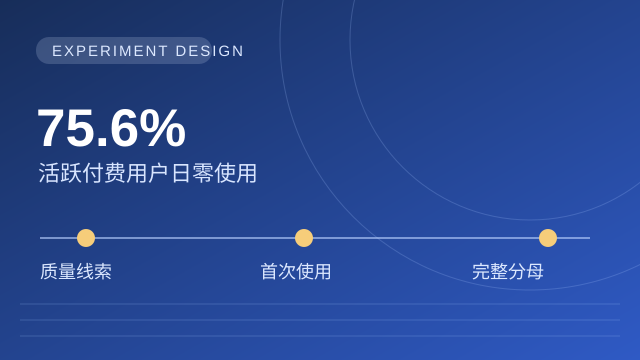
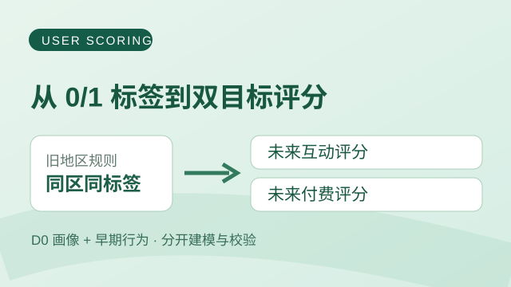
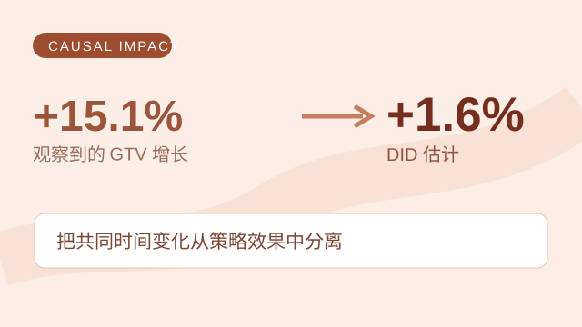

SELECTED WORK 项目案例 每个案例围绕一个具体判断：先交代问题和结论，再展开证据、方法与局限。  01 / 实验设计 · 因果判断 Super Like：验证首次使用策略 核心动作：分析使用分布，设计首次使用实验，锁定完整目标人群。 关键判断：Match 后质量只是线索；决策看全体目标用户的深聊增量。 查看案例 →  02 / 规则审计 · 预测建模 高价值用户：双目标评分 核心动作：审计地区规则，分别建模预测未来互动与付费。 关键判断：同地区用户仍有差异；互动与付费需要分别排序。 查看案例 →  03 / 准实验 · 商业权衡 ANR 优化：用 DID 估计效果 核心动作：以未受影响设备为对照，用 DID 估计广告位调整的效果。 关键判断：GTV 观察增长 +15.1%，DID 估计约 +1.6%；再权衡广告点击损失。 查看案例 → 更多案例 04 / 用户增长 Growth Accounting：拆解 MAU 的漏水桶 在 MAU 停滞、买量持续的背景下，按用户状态拆解增长并定位漏水环节。 05 / 渠道质量 广告渠道反作弊：36 个子渠道的同一种异常 从归因时间异常出发，结合跨平台基线与漏斗分析评估渠道质量。 阅读文章与工具复盘 →